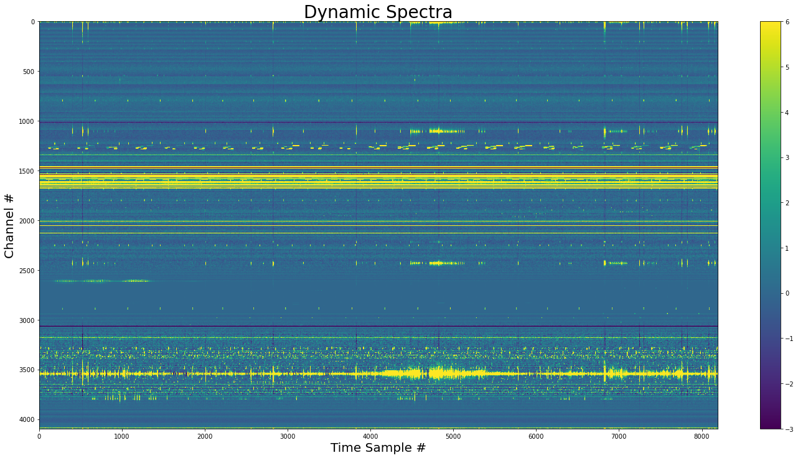
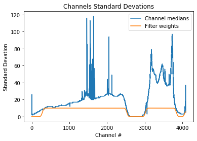
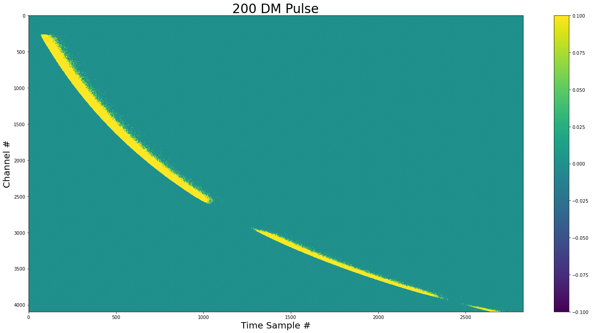
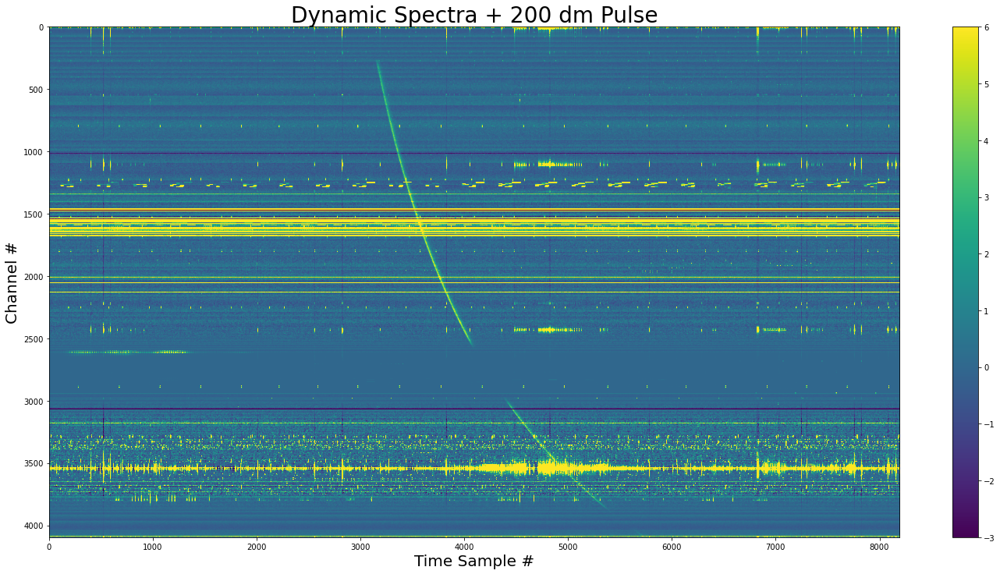
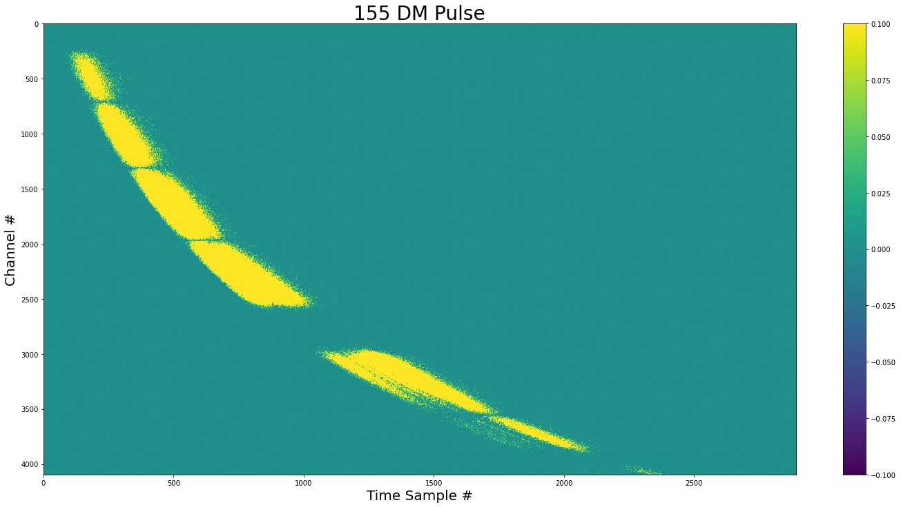
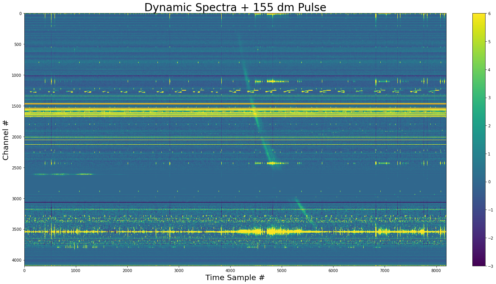
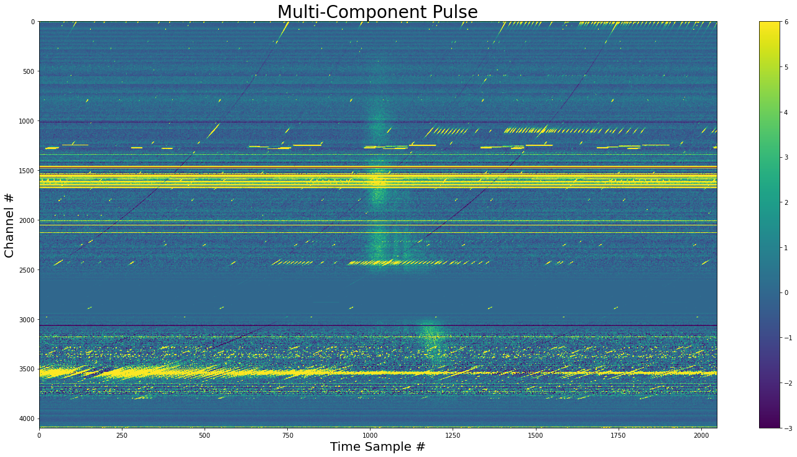

Create & Inject Pulses¶
Show how we can inject a pulse into a GREENBURST filterbank.¶
[1]:
import tempfile
from urllib import request
import matplotlib.pyplot as plt
import numpy as np
from jess.dispersion import dedisperse
from jess.fitters import median_fitter
from scipy.stats import median_abs_deviation
from will import create, inject
from your import Your
[2]:
def show_dynamic(
dynamic_spectra: np.ndarray, title: str = None, save: bool = False
) -> None:
"""
Show a dynamic spectra by first flattening it
in frequency. Do this by getting the medians of
each channel and then run a median filter along the
bandpass.
Then set the limits of the imshow so we get good detail
for the majority of the data.
Args:
dynmaic_spectra - the dynamic spectra to plot
title - Title of plot
save - Save the plot as `title` + `.png`
"""
spectra_mads = median_fitter(np.median(dynamic_spectra, axis=0))
flat = dynamic_spectra - spectra_mads
std = median_abs_deviation(flat, axis=None)
med = np.median(flat)
plt.figure(figsize=(20, 10))
plt.imshow(flat.T, vmin=med - 3 * std, vmax=med + 6 * std, aspect="auto")
plt.xlabel("Time Sample #", size=20)
plt.ylabel("Channel #", size=20)
plt.colorbar()
plt.tight_layout()
if title is not None:
plt.title(title, size=28)
if save:
plt.savefig(title.replace(" ", "_") + ".png", dpi=75, bbox_inches="tight")
Get a pulse search mode file¶
[3]:
# Get a 33MB filbterbank from zenodo, put it in
# a temp directory
temp_dir = tempfile.TemporaryDirectory()
empty_fil = temp_dir.name + "/empty_example.fil"
request.urlretrieve(
"https://zenodo.org/record/5860557/files/empty_example.fil", empty_fil
)
[3]:
('/tmp/tmpuzymcx9r/empty_example.fil',
<http.client.HTTPMessage at 0x7f4406a43280>)
[4]:
yr_obj = Your(empty_fil)
dynamic_spectra = yr_obj.get_data(0, 8192)
[5]:
# Show the base dynamic spectra
show_dynamic(dynamic_spectra, title="Dynamic Spectra")

Find a bandpass to scale the frequency structure¶
[6]:
plt.title("Channels Standard Devations")
plt.xlabel("Channel #")
plt.ylabel("Standard Devation")
medians = np.median(dynamic_spectra, axis=0)
plt.plot(medians, label="Channel medians")
filter_weights = create.filter_weights(dynamic_spectra)
# mutlipy by 10 to make it easier to see
plt.plot(10 * filter_weights, label="Filter weights")
plt.legend()
[6]:
<matplotlib.legend.Legend at 0x7f440437d3d0>

Create the pulse¶
[7]:
dm = 200
# create the pulse object
pulse_obj = create.SimpleGaussPulse(
sigma_time=0.001,
sigma_freq=350,
center_freq=yr_obj.your_header.center_freq,
dm=dm,
tau=20,
phi=np.pi / 3,
spectral_index_alpha=0,
chan_freqs=yr_obj.chan_freqs,
tsamp=yr_obj.your_header.tsamp,
nscint=0,
bandpass=filter_weights,
)
# pulse with 3e5 samples
pulse = pulse_obj.sample_pulse(nsamp=int(3e5))
[8]:
show_dynamic(pulse, title=f"{dm} DM Pulse")

We can see that there is not pulse in areas with zero variance (Like the cavity filter).
Inject the pulse¶
[9]:
dynamic_spectra_w_pulse = inject.inject_constant_into_file(
yr_input=yr_obj,
pulse=pulse,
start=yr_obj.your_header.nspectra // 2 - 1024,
gulp=yr_obj.your_header.nspectra,
)
[10]:
show_dynamic(dynamic_spectra_w_pulse, title=f"Dynamic Spectra + {dm} dm Pulse")

The pulse added to the dynamic spectra. We see that the pulse doesn’t exist where the channel variances are zero.
Pulse with complex frequency-time structure¶
This method samples all of the channels independently. It can accommodate changes in frequency and time, allowing for drifts, etc. The disadvantage that this is computationally more expansive making it ~10 times slower
[11]:
dm_1 = 155
pulse_obj_complex = create.GaussPulse(
relative_intensities=(1, 0.8, 0.8, 0.8),
sigma_times=(0.005, 0.001, 0.001, 0.006),
sigma_freqs=(150, 120, 120, 90),
pulse_thetas=(0, 0, 0, -np.pi / 60),
center_freqs=(1500, 1400, 1350, 1200),
dm=dm_1,
tau=25,
offsets=(0, 0.01536, 0.02304, 0.03968), # all from start of window
chan_freqs=yr_obj.chan_freqs,
tsamp=0.000256,
spectral_index_alpha=0,
nscint=2,
phi=0,
bandpass=filter_weights,
)
# pulse with 3e5 samples
pulse_complex = pulse_obj_complex.sample_pulse(nsamp=int(3e5))
[12]:
show_dynamic(pulse_complex, title=f"{dm_1} DM Pulse")

[13]:
dynamic_spectra_w_complex_pulse = inject.inject_constant_into_file(
yr_input=yr_obj,
pulse=pulse_complex,
start=yr_obj.your_header.nspectra // 2 - pulse_obj_complex.pulse_center,
gulp=yr_obj.your_header.nspectra,
)
[14]:
show_dynamic(
dynamic_spectra_w_complex_pulse, title=f"Dynamic Spectra + {dm_1} dm Pulse"
)

[15]:
show_dynamic(
dedisperse(
dynamic_spectra_w_complex_pulse,
dm=dm_1,
chan_freqs=yr_obj.chan_freqs,
tsamp=yr_obj.your_header.tsamp,
)[3072:-3072],
title="Multi-Component Pulse",
save=True,
)

The dedispersed pulse showing the downward drift. The final components is angled relative the the first three.
Periodic pulses w/ constant Fluence¶
[16]:
dynamic_spectra_w_pulse_perodic = inject.inject_constant_into_file(
yr_input=yr_obj,
pulse=pulse,
start=0,
period=1234,
gulp=yr_obj.your_header.nspectra,
)
[17]:
show_dynamic(dynamic_spectra_w_pulse_perodic, title="Dynamic Spectra + Pulsar")
Now we have a pulsar with a period of 1234 samples
Variable Fluence¶
[18]:
# Calculate the number of pulses needed
n_pulses = inject.num_pulses(period=1234, nspectra=yr_obj.your_header.nspectra)
print(f"Number of pulses: {n_pulses}")
Number of pulses: 7
[19]:
np.random.seed(2021)
pulse_energies = np.random.normal(loc=3e5, scale=2e5, size=n_pulses)
# pulse engergies must be an interger number of samples
np.around(pulse_energies, out=pulse_energies)
# must be positive
pulse_energies = pulse_energies.astype(int)
np.clip(pulse_energies, 0, None, out=pulse_energies)
print(f"{pulse_energies=}")
pulse_energies=array([597722, 435202, 216310, 138696, 411175, 158899, 526172])
[20]:
dynamic_spectra_w_pulse_perodic_diff_energies = inject.inject_distribution_into_file(
yr_input=yr_obj,
pulse_obj=pulse_obj,
pulse_counts=pulse_energies,
start=0,
period=1234,
gulp=yr_obj.your_header.nspectra,
)
[21]:
show_dynamic(
dynamic_spectra_w_pulse_perodic_diff_energies,
title="Pulsar with Varying Intensities",
save=True,
)
Now we have pulse-to-pulse variation of intensities.
[ ]: